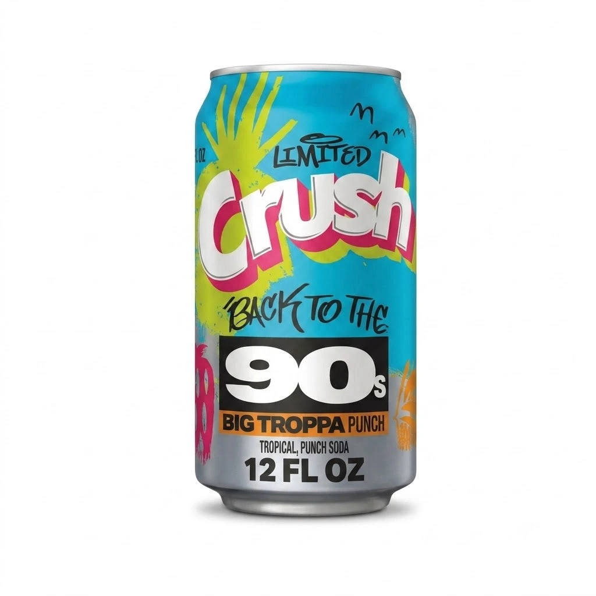
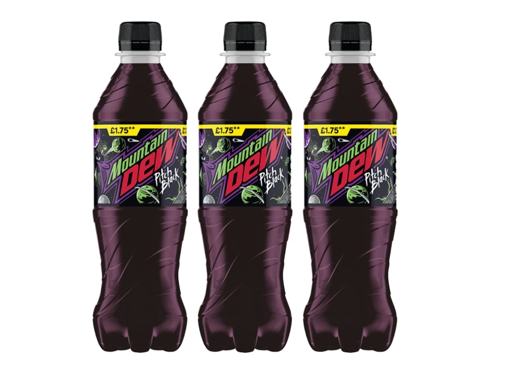
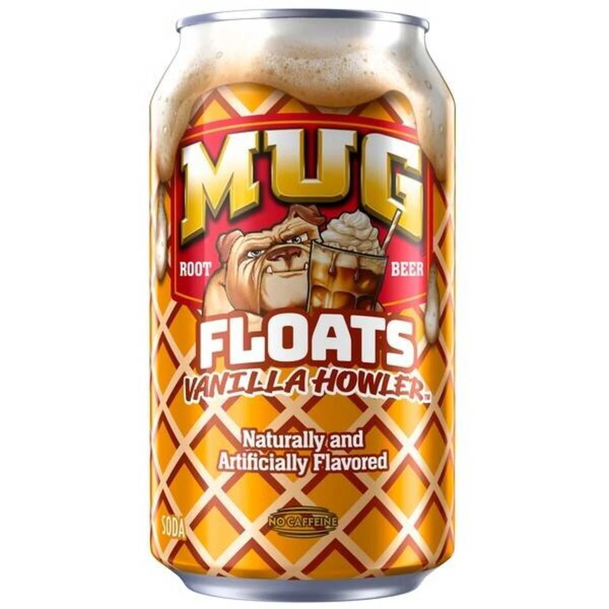
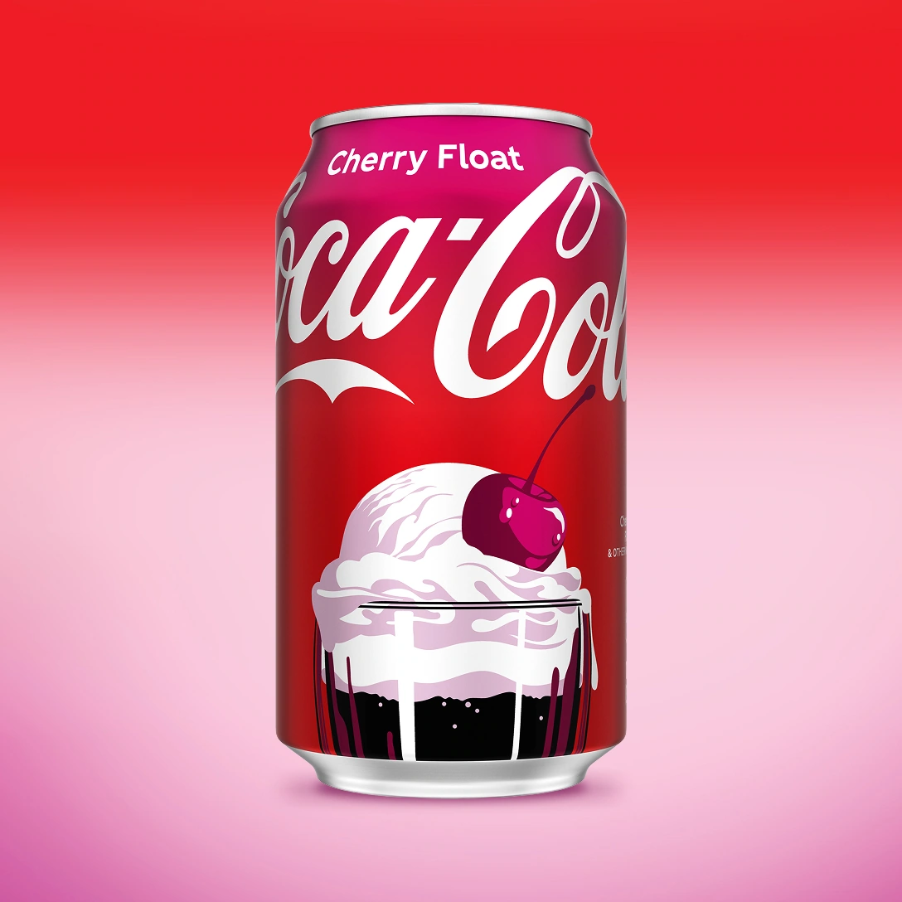
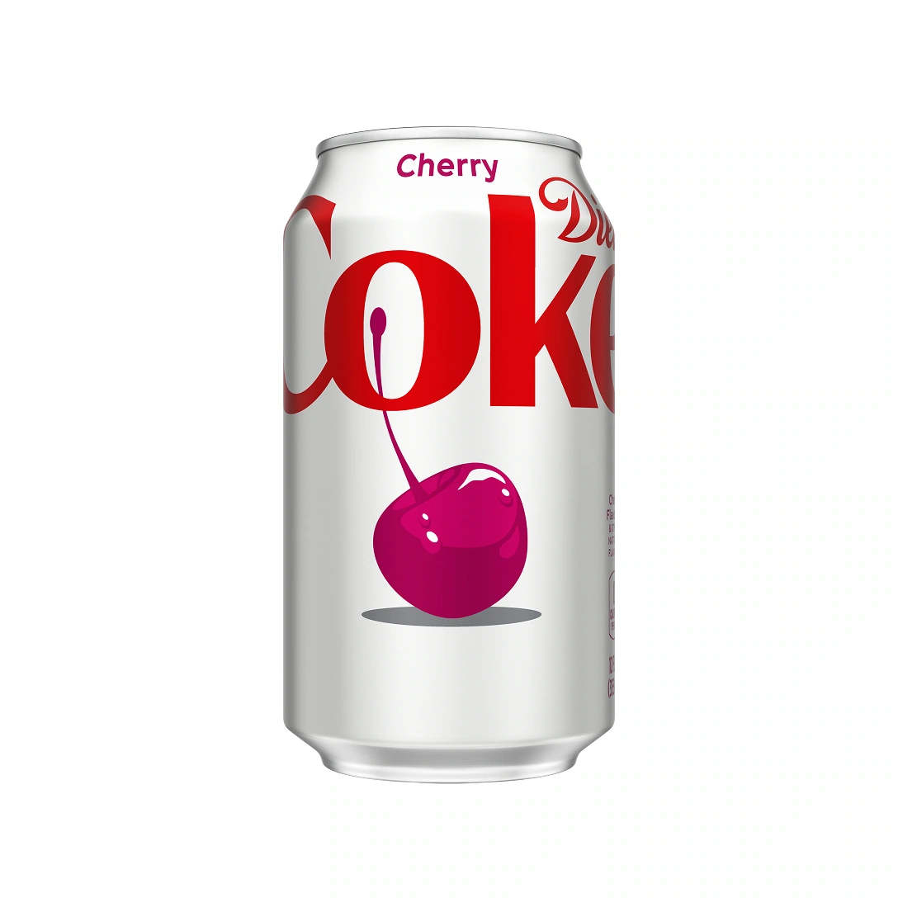
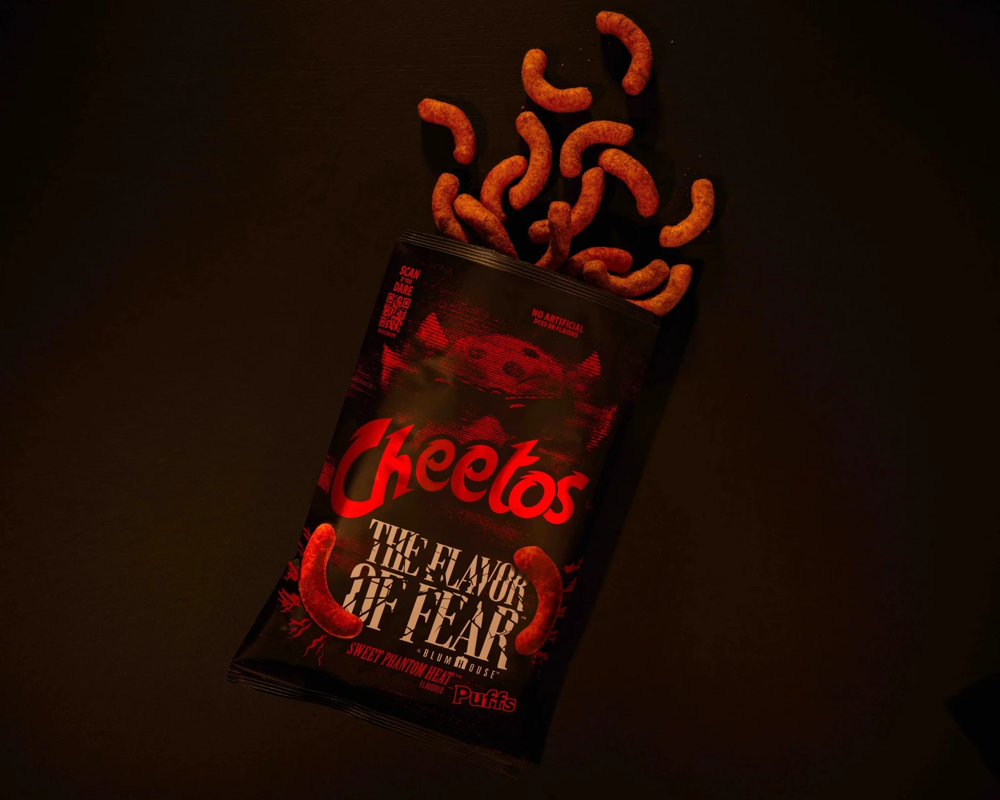

That blue Crush can is Big Troppa Punch.
Spotted a blue Crush can? The tropical punch flavor, limited-time status and U.S. places to check.
4 min read
What is new. What is gone. What is coming back.
Search is temporarily unavailable. You can still browse every article using the page links below.
1-6 of 38 articles

Spotted a blue Crush can? The tropical punch flavor, limited-time status and U.S. places to check.

The UK announcement behind the headlines, and why it does not confirm a new U.S. comeback.

Original or Zero Sugar? How to identify MUG's limited float-inspired soda and check for it locally.

Still in the U.S. lineup. What that tells us, what it does not, and why an overseas launch is a separate question.

The U.S. return is real. How to spot the correct can and avoid confusing it with Cherry Coke Zero.

A cinnamon-sweet start and a tingling finish, according to the brand. What is confirmed about the Halloween Puffs release.